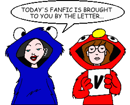
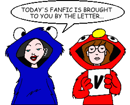

Fan Fiction
"V" by Author

Fan Fiction
"V" by Author

|
Authors: If you no longer wish for any of your stories to be posted, please send e-mail to fanfic@lawndale.net and I will remove them at once. |
| Vader15280@aol.com (Vader15280@aol.com) |
| I Can Be Only Numb II: The Quickening Category: Crossovers & Parodies A sequel to the "Highlander" crossover "In the End, I Can Be Only Numb." Daria is living happily with a daughter after winning the prize from Kurgen, only for an immortal who's been asleep for four hundred years to came and try to take the prize for himself. Now Daria must protect both the ones she loves and her own head from this new villain. |
| I Can Be Only Numb III: The Irony Category: Crossovers & Parodies Daria and Jane are living life as old women when uninvited guests from the future show up. A few surprises here and there, and the return of an old friend. Beware of Cynics bearing swords! |
| The Lawndale Factor [Artwork] Category: Crossovers & Parodies With widespread news of mutants, Daria finds that it hits close to home, along with a figure ready to wage war against humans for survival! Based on Marvel's "The X-Men". |
| Various Authors |
| Abruptly Amy (The Spinoff That Was) (*) Category: Series & Multi-Part Stories (Crossovers & Parodies) A series of stories that details the life of Amy Barksdale in her own TV series. Wait... you mean you've never heard of "Abruptly Amy"? Well, read on and find out... if you dare... |
| The Daria Multiverse Category: Series & Multi-Part Stories (Sci-Fi, Fantasy & Horror) A collection of stories that cross the various Daria multiverses. Includes all stories from the Daylight, Judith Strikes!, Legion of Lawndale Heroes, Shining Star, and Tales of the Ringbearers shared universes. |
| Daylight Category: Series & Multi-Part Stories (Sci-Fi, Fantasy & Horror) For unknown reasons and with little warning, the Sun has destabilized and has become hotter and highly eruptive, with profound consequences for human civilization (to say nothing of the rest of Earth's biosphere). This collection of stories, set in various Dariaverses, tells how our well-known Lawndale denizens cope with the first Coronal Mass Ejection event -- "Zero Hour" -- and how it has forever changed life in and around Earth. |
| Judith Strikes! Category: Series & Multi-Part Stories (Sci-Fi, Fantasy & Horror) In this series, an alternate universe version of Daria, Judith, travels from world to world in search of information and artifacts related to cross-dimensional travel... and leaves a vast amount of corpses behind. Completely sociopathic and armed to the teeth with a variety of high-tech & magical weaponry, her secondary objective is to cause as much pain & suffering to the multiverse's Daria's as possible. |
| Legion of Lawndale Heroes Category: Series & Multi-Part Stories (Sci-Fi, Fantasy & Horror) In this sci-fi/alternate universe series, the major characters of "Daria" have acquired superpowers and are convinced (or manipulated) into forming "the Legion," in order to combat threats on Earth (and beyond). |
| Shining Star Category: Series & Multi-Part Stories (Sci-Fi, Fantasy & Horror) Similar in design and intent to the Daylight series, this series describes a chronological series of astronomical and biological events that occur over a period of years when a supernova erupts in Earth's interstellar neighborhood, only 14 light years away. |
| Tales of the Ringbearers [Artwork] Category: Series & Multi-Part Stories (Sci-Fi, Fantasy & Horror) (no description available) |
| Voice Of My |
| Anaphrodariac Category: Romance Daria discusses sexuality with jane. Set after "Is It College Yet?". |
| Daria is Flushed Category: Romance The author dislikes Daria/Trent shipper stories. So, of course, she writes one. |
| Morning Category: Miscellaneous Daria begins her day. |
| A Note on the Library Table Category: Miscellaneous An anonymous note found at a library table in Lawndale High. Who is the writer?? |